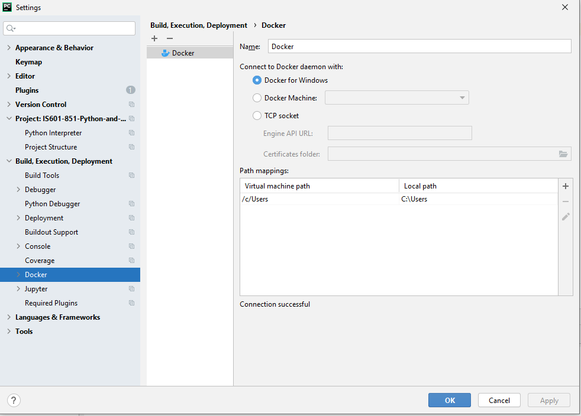

How to connect Docker with Pycharm to write python code
Go to File -> Settings
Under Build, Execution, Deployment go to the Docker option
Click the + button to create a new entry
Since this is a windows machine choose Docker for Windows and you can leave the rest as their default options

Once you are in your PyCharm project you will need both your python script as well as a docker file
Sample python script
Sample Docker File: Your Dockerfile should include any package installation commands that will be needed to run the given script
Now once you have these files ready the next step is to add a Run/Debug configuration that will leverage the Docker
You can find this option to the left of the green triangle in the task bar
Then go to Add New Configuration and choose Docker File
Give your configuration a name and image tag and select the name of the Dockerfile (in this case it’s just called Dockerfile)
Make sure the Run built image box is checked. Then click apply and OK.
If you then click the green triangle button to run your script you will see your docker containers and build log in the pane below
In order to see any output from the python script click over from the build log to the attached console